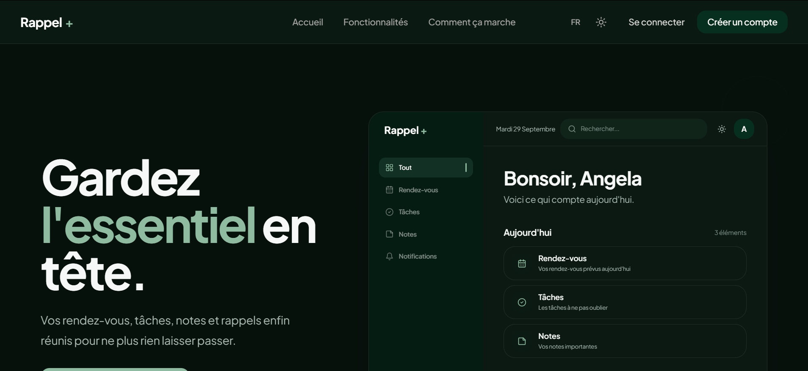

01
Projet personnel · 2026
Rappel+
Une application web pensée pour centraliser les tâches et les rendez-vous au même endroit. Elle permet de créer, modifier et suivre les éléments à effectuer ou à venir, tout en intégrant un système de rappels automatisés et une gestion des données avec Supabase.
React
JavaScript
Supabase